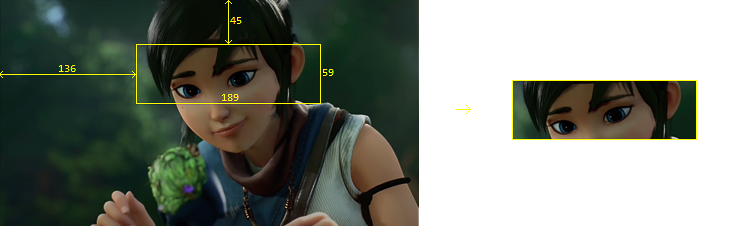

Resize
ffmpeg -i input.mp4 -vf scale=640:360 output.mp4
ffmpeg -i input.mp4 -vf scale=iw/3:ih/3 output.mp4

ffmpeg -i input.mp4 -vf scale=640:360 output.mp4
Crop timeline
ffmpeg -i input.mp4 -ss 01:00 -t 00:30 output.mp4
Crop area
ffmpeg -i input.mp4 -vf crop=189:59:136:45 output.mp4

Video to images
ffmpeg -i input.mp4 %d.png
Compression
ffmpeg -i input.mp4 -crf 20 output.mp4 #18-28
Timelapse
ffmpeg -i imgs/%d.png output.mp4
ffmpeg -i imgs/%d.png -c:v libx264 output.mp4
ffmpeg -framerate 60 -i imgs/%d.png -c:v libx264 output.mp4
ffmpeg -framerate 60 -i imgs/%d.png -c:v libx264 -r 24 output.mp4 # -r (speed video in fps)
Acceleration
ffmpeg -i input.mp4 -vf setpts=0.5*PTS output.mp4 #faster
ffmpeg -i input.mp4 -vf setpts=2.0*PTS output.mp4 #slower

Specific frame
ffmpeg -i input.mp4 -vframes 4 output.png
Remove audio from video
ffmpeg -i input.mp4 -an output.mp4
Concat videos
(for %i in (*.mp4) do @echo file '%i') > list.txt
(for %i in (input/*.mp4) do @echo file '%i') > input/list.txt
ffmpeg -f concat -i input/list.txt -c copy output/output.mp4
(for %i in (input/*.mp4) do @echo file '%i') > input/list.txt && ffmpeg -f concat -i input/list.txt -c copy output/output.mp4